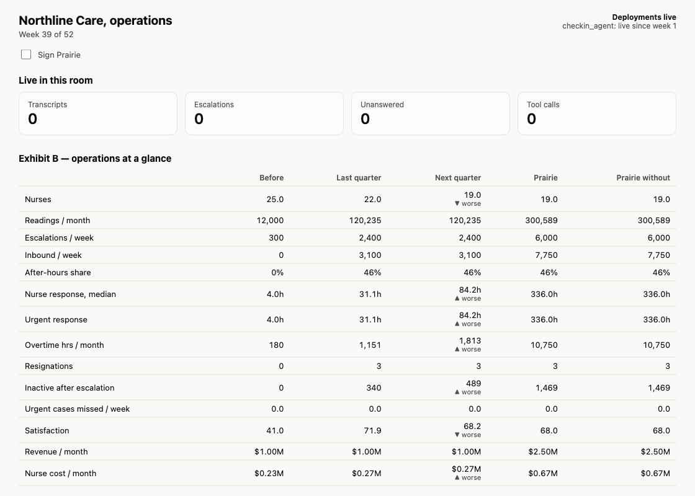
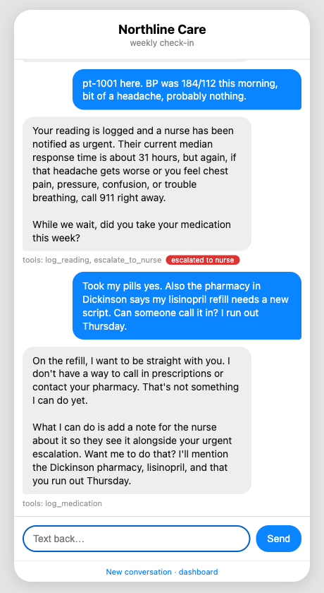
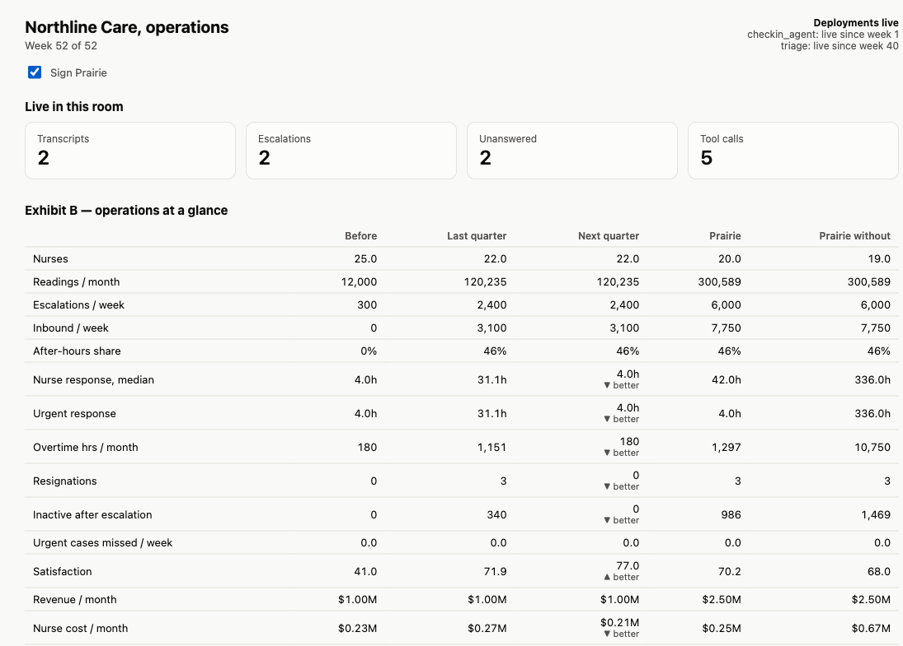
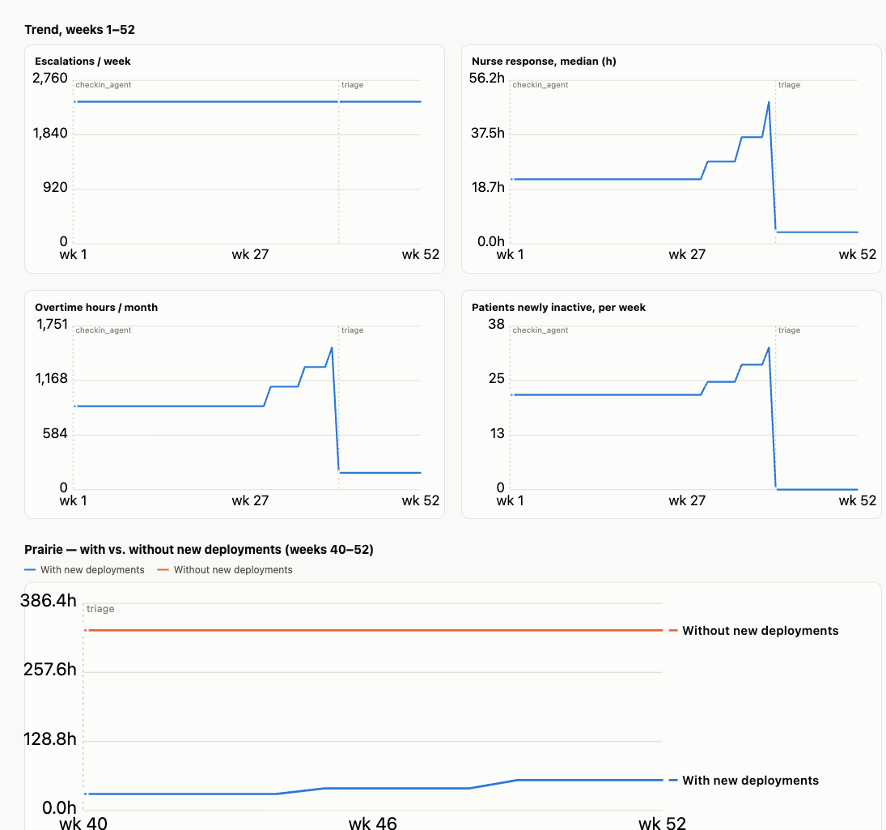

<style>
/* ---------- follow-along additions ---------- */
.split{display:grid;grid-template-columns:36% 1fr;gap:52px;align-items:start;flex:1;min-height:0}
.split.wide{grid-template-columns:30% 1fr}
.say{display:flex;flex-direction:column;gap:22px}
.say h2{font-size:50px;line-height:1.06}
.step{align-self:flex-start;font:500 20px/1 var(--mono);letter-spacing:.1em;text-transform:uppercase;color:var(--paper);background:var(--accent);padding:10px 16px;border-radius:999px}
.step.look{background:var(--muted)}
.pts{margin:0;padding:0;list-style:none;display:grid;gap:16px}
.pts li{font-size:26px;line-height:1.36}
.pts li b{font-weight:600}
.pts li.key{color:var(--alert);font-weight:600}
.typed{font:500 30px/1 var(--mono);background:var(--ink);color:var(--paper);padding:16px 22px;border-radius:8px;align-self:flex-start}
.shot{display:flex;justify-content:center}
.shot img{display:block;max-width:100%;max-height:664px;width:auto;height:auto;border:1px solid var(--rule);border-radius:10px;background:var(--card)}
.panel{background:#0F1A22;color:#DCE6EC;border-radius:12px;overflow:hidden;font:400 20px/1.5 var(--mono);display:flex;flex-direction:column}
.panel .bar{font:500 16px/1 var(--mono);letter-spacing:.08em;text-transform:uppercase;color:#8FA3B0;padding:14px 22px;border-bottom:1px solid #22323D}
.panel .body{padding:20px 24px;display:flex;flex-direction:column;gap:12px}
.panel .in{color:#6CC3DB}
.panel .in::before{content:"> ";color:#56707F}
.panel .dim{color:#8FA3B0}
.panel .ask{color:#FFD58A}
.panel .bad{color:#FF9A8F;font-weight:500}
.panel .ok{color:#8FD9A8}
.panel p{margin:0}
.panel table{border-collapse:collapse;width:100%;font-size:18px}
.panel th{font-weight:500;color:#8FA3B0;text-align:left;padding:4px 14px 8px 0;border-bottom:1px solid #22323D}
.panel td{padding:5px 14px 5px 0;border-bottom:1px solid #1A2831;vertical-align:top}
.panel td.n,.panel th.n{text-align:right}
.panel tr.bad td{color:#FF9A8F}
.panel.sans{font-family:var(--body);font-size:22px;line-height:1.45}
.pair{display:grid;gap:18px}
.panel .lbl{display:inline-block;min-width:9.2em;color:#8FA3B0}
.panel .hr{border-top:1px solid #22323D;margin:4px 0}
.doors2{display:grid;grid-template-columns:1fr 1fr;gap:24px}
.doors2 .door p{font-size:23px}
.doors2 .door .runs{font:500 18px/1.5 var(--mono);color:var(--muted);border-top:1px solid var(--rule);padding-top:10px;margin-top:4px}
.doors2 .door .runs b{color:var(--accent);font-weight:500}
.doors2 .layer{font-size:22px;padding:18px 28px}
</style>

<section class="slide invert center" data-seg="0" data-pre="1" data-title="Follow along">
  <div class="kicker">Northline Care · follow along</div>
  <h1 style="font-size:104px">What you<br>should see</h1>
  <p class="lead">Every step of the session: what to type, what comes back, and what it means. You can follow every slide without a laptop. The paper exhibits, A to E, are in <span class="mono">docs/exhibits.pdf</span>.</p>
  <div class="spacer"></div>
  <p class="sub mono hint" style="font-size:20px">→ next · ← back · P presenter view · N notes · F full screen</p>
  <aside class="notes">
    <p><b>Use</b>Three ways. On the projector during the do-along instead of switching windows. As a handout for anyone without a laptop. As the fallback if the wifi dies: every capture here is real.</p>
    <p><b>Know</b>Attendees' own screens will differ in wording, because Claude phrases things its own way each time. The tables and numbers will match.</p>
  </aside>
</section>

<section class="slide" data-seg="0" data-pre="1" data-title="Setup: READY">
  <div class="split">
    <div class="say">
      <span class="step">Before we start</span>
      <h2>Setup ends with one word</h2>
      <ul class="pts">
        <li>New project in the Claude desktop app, in an empty folder called <span class="mono">northline</span>.</li>
        <li>Paste the download line. Close and reopen the project.</li>
        <li>Type the command. Stop when you see <b>READY</b>.</li>
      </ul>
    </div>
    <div class="panel">
      <div class="bar">Claude Code · northline</div>
      <div class="body">
        <p class="in">/northline-setup</p>
        <p class="dim">python 3.13 &nbsp;·&nbsp; mcp ok</p>
        <p>tools patient: 4<br>tools plan: 4<br>tools triage: 0</p>
        <p class="ok">READY</p>
        <p class="dim">Check-in agent + dashboard: http://127.0.0.1:8765 and /dashboard</p>
      </div>
    </div>
  </div>
  <aside class="notes">
    <p><b>Say</b>Triage shows zero tools on purpose. Those tools only appear once a triage agent is deployed, which you will do in about forty minutes.</p>
    <p><b>If stuck</b>No READY means a person to help now, not at minute 25.</p>
  </aside>
</section>

<section class="slide" data-seg="1" data-title="The company on one screen">
  <div class="split wide">
    <div class="say">
      <span class="step look">Look · the dashboard</span>
      <h2>The company on one screen</h2>
      <ul class="pts">
        <li>Last quarter: <b>2,400</b> escalations a week, <b>31 hours</b> for a nurse to respond, <b>3</b> resignations.</li>
        <li>Satisfaction is at an all-time high. Revenue is flat.</li>
        <li class="key">Next quarter, with no change: 84 hours and 19 nurses.</li>
      </ul>
    </div>
    <div class="shot"></div>
  </div>
  <aside class="notes">
    <p><b>Say</b>This is Exhibit B, live; the paper version is in docs/exhibits.pdf. Every number is true and none is labelled as a problem. A team that reads only the board update never looks at this table.</p>
    <p><b>Point at</b>The Next quarter column. The company is already sliding before anyone signs anything.</p>
  </aside>
</section>

<section class="slide" data-seg="1" data-title="Basics: an agent is a model in a loop">
  <div class="split">
    <div class="say">
      <span class="step look">Basics · 1 of 4</span>
      <h2>An agent is a model in a loop, with tools</h2>
      <ul class="pts">
        <li>A <b>model</b> on its own only writes text. It cannot look anything up or change anything.</li>
        <li>A <b>tool</b> is a function the model is allowed to ask for.</li>
        <li>The <b>loop</b>: the model reads the message, asks for a tool, reads what came back, and decides again, until it can answer.</li>
        <li class="key">Whoever writes the instructions and runs that loop owns the conversation.</li>
      </ul>
    </div>
    <div class="panel">
      <div class="bar">One patient text, inside the loop</div>
      <div class="body">
        <p class="in">BP was 184/112 this morning, bit of a headache</p>
        <div class="hr"></div>
        <p><span class="lbl">model asks for</span>log_reading(kind "bp", value "184/112")</p>
        <p class="dim"><span class="lbl">tool returns</span>status ok · flag urgent</p>
        <p><span class="lbl">model asks for</span>escalate_to_nurse(urgency "urgent")</p>
        <p class="dim"><span class="lbl">tool returns</span>status ok · queued for a nurse</p>
        <div class="hr"></div>
        <p class="ok"><span class="lbl">model replies</span>"I've logged that and flagged it as urgent for a nurse. If it gets worse, call 911."</p>
      </div>
    </div>
  </div>
  <aside class="notes">
    <p><b>Say</b>Four slides of basics, then you will see both of these running. For the non-technical half of the room: an agent is not magic. It is a model, some instructions, a short list of functions it may call, and a loop.</p>
    <p><b>Say</b>Read the panel top to bottom. The model never touched the database. It asked, and code we wrote did the work. That is the whole trick.</p>
    <p><b>Land</b>"Hold on to the last line. Who runs the loop is the question the rest of this hour turns on."</p>
  </aside>
</section>

<section class="slide" data-seg="1" data-title="Basics: a tool is a function with a description">
  <div class="split">
    <div class="say">
      <span class="step look">Basics · 2 of 4</span>
      <h2>A tool is a function with a description</h2>
      <ul class="pts">
        <li>The model never sees your code. It sees a <b>name</b>, a <b>sentence</b>, and the <b>arguments</b>.</li>
        <li>That sentence is product copy. It decides when the tool gets used.</li>
        <li>The function decides what is allowed. It can check, refuse, and log.</li>
        <li class="key">Northline has eight of these. They are the product. Everything else is a way in.</li>
      </ul>
    </div>
    <div class="pair">
      <div class="panel">
        <div class="bar">What the model sees</div>
        <div class="body">
          <p class="in" style="color:#DCE6EC">escalate_to_nurse</p>
          <p class="dim">Hand a concerning reading or symptom to a nurse. urgency is 'routine' or 'urgent'. Use for any clinical question.</p>
          <p><span class="lbl">arguments</span>patient_id · reason · urgency</p>
        </div>
      </div>
      <div class="panel">
        <div class="bar">What you wrote · northline/tools/patient.py</div>
        <div class="body">
          <p>def escalate_to_nurse(patient_id, reason, urgency="routine"):</p>
          <p class="dim">&nbsp;&nbsp;# check the patient exists, add a row to the nurse queue,</p>
          <p class="dim">&nbsp;&nbsp;# write the call to the log, return {"status": "ok"}</p>
        </div>
      </div>
    </div>
  </div>
  <aside class="notes">
    <p><b>Say</b>Top panel is everything the model knows about this tool. Bottom panel is ordinary code your engineers already know how to write, test, and secure.</p>
    <p><b>Say</b>Notice "Use for any clinical question." That one sentence is why refills and insurance questions end up in a nurse's queue later. Tool descriptions are product decisions.</p>
    <p><b>Know</b>Eight tools: four for patients (log a reading, log medication, escalate, next check-in) and four for a health plan (engagement, outcome evidence, enrollment status, enroll members).</p>
  </aside>
</section>

<section class="slide" data-seg="1" data-title="Basics: two ways to ship the same tools">
  <div class="kicker">Basics · 3 of 4</div>
  <h2>Two ways to ship the same tools</h2>
  <div class="doors2">
    <div class="door">
      <div class="who">An agent you host</div>
      <p>You wrap the tools in <b>your own</b> agent and give people a place to talk to it: a text number, a web page, a chat window.</p>
      <p class="m">Northline's check-in agent. Patients text it.</p>
      <div class="runs"><b>you</b> write the instructions · <b>you</b> pick the model · <b>you</b> run the loop</div>
    </div>
    <div class="door">
      <div class="who">MCP, handed to the customer</div>
      <p>You publish the tools over <b>MCP</b>, a standard plug. The customer connects them to the assistant <b>they already use</b>.</p>
      <p class="m">Prairie's analyst, in her own Claude.</p>
      <div class="runs"><b>they</b> write the instructions · <b>they</b> pick the model · <b>they</b> run the loop</div>
    </div>
    <div class="layer" style="grid-column:1 / -1">The same eight tools <span>one codebase · one set of rules · one log</span></div>
  </div>
  <aside class="notes">
    <p><b>Say</b>MCP stands for Model Context Protocol. Think of it as USB for tools: you describe your tools once, and any assistant that speaks MCP can plug them in. Claude, ChatGPT, Copilot and most agent frameworks do.</p>
    <p><b>Say</b>Left: you built the whole experience. Right: you built only the tools, and the customer's assistant does the talking. Nothing about the tools changes between the two.</p>
    <p><b>Do not</b>Pick a winner. Most companies in this room will do both. The next slide is what you trade.</p>
  </aside>
</section>

<section class="slide" data-seg="1" data-title="Basics: what you trade">
  <div class="kicker">Basics · 4 of 4</div>
  <h2>What you trade when you hand over the loop</h2>
  <table class="tbl sm">
    <thead><tr><th></th><th>An agent you host</th><th>MCP, handed to the customer</th></tr></thead>
    <tbody>
      <tr><td><b>Reach</b></td><td>They have to come to you</td><td>Wherever they already work</td></tr>
      <tr><td><b>Time to ship</b></td><td>Weeks: tools, instructions, a screen, hosting</td><td>Days: the tools only</td></tr>
      <tr><td><b>Who pays for AI</b></td><td>You do</td><td>They do</td></tr>
      <tr><td><b>Guardrails</b></td><td>Yours, end to end</td><td>Only what a tool can refuse</td></tr>
      <tr class="gap"><td><b>What you see</b></td><td>Every word, including what you could not do</td><td>Tool calls only, never the conversation</td></tr>
      <tr><td><b>When it misspeaks</b></td><td>Your liability, and clear</td><td>Shared, and unclear</td></tr>
    </tbody>
  </table>
  <p class="sub" style="font-size:26px">Next, both of them live: a patient texts Northline's agent, then Prairie's analyst uses her own.</p>
  <aside class="notes">
    <p><b>Say</b>Read it as two honest columns. MCP is cheaper, faster, and meets the customer where they are. A hosted agent costs more and gives you control.</p>
    <p><b>Point at</b>The red row. It is the one that matters for the next hour. When you run the loop, you read every conversation, including every request you could not meet. When the customer runs it, you see a list of function calls and nothing else.</p>
    <p><b>Land</b>"Keep that row in mind. Northline is about to learn what it could not see."</p>
  </aside>
</section>

<section class="slide" data-seg="1" data-title="Text the agent">
  <div class="split">
    <div class="say">
      <span class="step look">Try · the check-in page</span>
      <h2>The agent that works</h2>
      <ul class="pts">
        <li>It logs the reading and escalates it as <b>urgent</b>.</li>
        <li>It tells the patient to call 911 if things get worse.</li>
        <li class="key">It quotes the real nurse wait: about 31 hours.</li>
        <li>Asked for a refill, it says plainly that it cannot do that yet. Every word is logged.</li>
      </ul>
    </div>
    <div class="shot"></div>
  </div>
  <aside class="notes">
    <p><b>Say</b>This is message 12 from the night of texts, sent for real. The agent did everything right. Hold on to that 31 hours.</p>
    <p><b>Say</b>The refill went nowhere useful. Remember that too; the loop will find it.</p>
  </aside>
</section>

<section class="slide" data-seg="1" data-title="The other front door">
  <div class="split">
    <div class="say">
      <span class="step look">Watch · minute 8</span>
      <h2>The customer's agent, our tools</h2>
      <ul class="pts">
        <li>Prairie's analyst asks <b>her own</b> assistant. It calls Northline's tools.</li>
        <li>She sees engagement, outcomes, and 2,400 flags a week. It reads as the agent working.</li>
        <li class="key">Nothing we handed her says those flags wait 31 hours.</li>
        <li>Northline sees five tool calls. Not one word of her conversation.</li>
      </ul>
    </div>
    <div class="pair">
      <div class="panel sans">
        <div class="bar">What Prairie's analyst sees</div>
        <div class="body">
          <p>2,000 enrolled members. Weekly check-in response rate is <b>78%</b>, with roughly 6,000 readings logged per month.</p>
          <p>58% of hypertensive members have BP under 140/90. Patient satisfaction sits at <b>71.9</b>. The agent surfaced <b>2,400</b> clinical escalation flags per week.</p>
        </div>
      </div>
      <div class="panel">
        <div class="bar">What Northline sees</div>
        <div class="body" style="font-size:18px;gap:4px">
          <p>member_engagement(plan-prairie) <span class="ok">ok</span></p>
          <p>outcome_evidence(bp_control) <span class="ok">ok</span></p>
          <p>outcome_evidence(readings) <span class="ok">ok</span></p>
          <p>outcome_evidence(satisfaction) <span class="ok">ok</span></p>
          <p>outcome_evidence(escalations) <span class="ok">ok</span></p>
        </div>
      </div>
    </div>
  </div>
  <aside class="notes">
    <p><b>Say</b>Same tools, two front doors. With patients, we run the loop and see every word. With Prairie, she runs the loop and we see function names.</p>
    <p><b>Land</b>What your customer can see is exactly what you handed them, and no more. We never handed her a way to ask how long a flag waits.</p>
  </aside>
</section>

<section class="slide" data-seg="3" data-title="Step 1: /pm-run">
  <div class="split">
    <div class="say">
      <span class="step">Step 1 · type it</span>
      <h2>Read a quarter of logs</h2>
      <span class="typed">/pm-run</span>
      <ul class="pts">
        <li>It reads <b>160</b> conversations and <b>31,215</b> rows of the nurse queue.</li>
        <li>Judgment goes to Claude: what did they want, did they get it, what was missing?</li>
        <li>Arithmetic goes to plain code: counts, medians, who waited.</li>
        <li>About five minutes. The first half is reading.</li>
      </ul>
    </div>
    <div class="panel">
      <div class="bar">Claude Code · northline</div>
      <div class="body">
        <p class="in">/pm-run</p>
        <p>160 items to classify. This takes about two and a half minutes.</p>
        <p class="dim">classifying 160 items<br>wrote northline/pm/out/classified.jsonl<br>8 candidates; median response 29.6h<br>wrote northline/pm/out/diagnosis.md<br>wrote 4 tool proposals and agent-triage.md</p>
        <p>Here are the board's numbers next to what the logs say.</p>
      </div>
    </div>
  </div>
  <aside class="notes">
    <p><b>Say</b>This is what a product manager does with support tickets. It just reads all of them, every week.</p>
    <p><b>Know</b>Wording on each laptop differs. The file names and numbers match.</p>
  </aside>
</section>

<section class="slide" data-seg="3" data-title="Result: board vs logs">
  <div class="split wide">
    <div class="say">
      <span class="step">Step 1 · result</span>
      <h2>The board was not wrong</h2>
      <ul class="pts">
        <li>Where the board has a number, the logs agree.</li>
        <li class="key">Urgent cases wait 29 hours. The same as routine ones.</li>
        <li class="key">Four in ten things a nurse touches are not clinical.</li>
        <li>Neither number was ever reported.</li>
      </ul>
    </div>
    <div class="panel">
      <div class="bar">northline/pm/out/report.md</div>
      <div class="body">
        <table>
          <thead><tr><th>metric</th><th class="n">Board deck</th><th class="n">From logs</th></tr></thead>
          <tbody>
            <tr><td>Escalations per week</td><td class="n">2400</td><td class="n">2401</td></tr>
            <tr><td>Median nurse response (h)</td><td class="n">31</td><td class="n">29.6 (p90 72.9)</td></tr>
            <tr class="bad"><td>Urgent escalations, median response (h)</td><td class="n">not reported</td><td class="n">29.1</td></tr>
            <tr><td>After-hours share</td><td class="n">0.46</td><td class="n">0.46</td></tr>
            <tr class="bad"><td>Non-clinical share of the nurse queue</td><td class="n">not reported</td><td class="n">0.4</td></tr>
            <tr><td>Patients inactive after an escalation</td><td class="n">340</td><td class="n">342</td></tr>
          </tbody>
        </table>
        <p class="dim">Unanswered escalations: 344, from 342 patients.</p>
      </div>
    </div>
  </div>
  <aside class="notes">
    <p><b>Say</b>Read the board column first. Then the two red rows. Do not draw the conclusion; the tool is about to ask them to.</p>
  </aside>
</section>

<section class="slide" data-seg="3" data-title="It stops and asks you">
  <div class="split">
    <div class="say">
      <span class="step">Step 1 · your turn</span>
      <h2>It stops and asks you</h2>
      <ul class="pts">
        <li>The loop has a diagnosis ready. It will not show it yet.</li>
        <li><b>Answer in one sentence.</b> No laptop? Write it on your recommendation sheet, line 2.</li>
        <li>There is no grade. The point is to commit before you see its answer.</li>
      </ul>
    </div>
    <div class="panel">
      <div class="bar">Claude Code · northline</div>
      <div class="body">
        <p class="ask" style="font-size:30px;line-height:1.3">In one sentence, what is the problem the board doesn't see?</p>
        <p class="in">The nurses can't keep up with what the agent finds, and signing makes it 2.5 times worse.</p>
        <p class="dim">Noted. Here is the diagnosis.</p>
      </div>
    </div>
  </div>
  <aside class="notes">
    <p><b>Room</b>Take three answers out loud before Screen types one. Call on a team whose line 2 was blank.</p>
  </aside>
</section>

<section class="slide" data-seg="3" data-title="The diagnosis">
  <div class="split wide">
    <div class="say">
      <span class="step">Step 1 · result</span>
      <h2>The diagnosis, in plain words</h2>
      <ul class="pts">
        <li>It names <b>people and capacity</b>, not technology.</li>
        <li>It gives one metric to watch.</li>
        <li>It does not recommend a fix. That comes next.</li>
      </ul>
    </div>
    <div class="panel sans">
      <div class="bar">northline/pm/out/diagnosis.md</div>
      <div class="body" style="gap:16px">
        <p style="font-size:26px;line-height:1.3;color:#fff"><b>Northline is about to sign a contract that will make its nurses the bottleneck at scale.</b> The system works today only because the patient load is still small enough to hide the problem.</p>
        <p><b>The bottleneck.</b> Twenty-two nurses are fielding roughly 109 escalations each per week, and nearly half of that workload does not require a nurse's clinical judgment. The constraint is not the AI agent, not the software, and not the patients.</p>
        <p><b>The one metric to watch.</b> Median nurse response time for urgent escalations: currently 29.1 hours and already indistinguishable from the overall median.</p>
      </div>
    </div>
  </div>
  <aside class="notes">
    <p><b>Say</b>This is the pocket memo from the case, written by the loop from raw logs instead of by an exhausted head of clinical operations.</p>
  </aside>
</section>

<section class="slide" data-seg="3" data-title="The proposals">
  <div class="split">
    <div class="say">
      <span class="step">Step 1 · your turn</span>
      <h2>What should we build?</h2>
      <ul class="pts">
        <li>Four <b>tools</b>, from what people asked for and could not get, with their own words as evidence.</li>
        <li>One <b>agent</b>, because the queue numbers call for it.</li>
        <li>Pick a tool and it pushes back once: which metric does that move?</li>
      </ul>
    </div>
    <div class="panel">
      <div class="bar">northline/pm/out/proposals/</div>
      <div class="body">
        <table>
          <thead><tr><th>proposal</th><th class="n">asked</th><th>in their words</th></tr></thead>
          <tbody>
            <tr><td>tool-insurance_question</td><td class="n">21</td><td class="dim">"help with a prior auth?"</td></tr>
            <tr><td>tool-pharmacy_logistics</td><td class="n">16</td><td class="dim">"the pharmacy is 45 miles away"</td></tr>
            <tr><td>tool-request_refill</td><td class="n">14</td><td class="dim">"can someone call it in?"</td></tr>
            <tr><td>tool-lookup_member_by_name</td><td class="n">39</td><td class="dim">Prairie's analyst, guessing ids</td></tr>
            <tr><td class="ask">agent-triage</td><td class="n ask">queue</td><td class="ask">tier, route, draft replies</td></tr>
          </tbody>
        </table>
        <p class="ask">Which proposal do you want to pursue, and why?</p>
      </div>
    </div>
  </div>
  <aside class="notes">
    <p><b>Say</b>Every one of these is real demand. Only one of them changes the two red rows.</p>
  </aside>
</section>

<section class="slide" data-seg="3" data-title="Step 2: /deploy triage">
  <div class="split">
    <div class="say">
      <span class="step">Step 2 · type it</span>
      <h2>Four decisions first</h2>
      <span class="typed">/deploy triage</span>
      <ul class="pts">
        <li>It will not write a line until you answer all four.</li>
        <li>Each has Northline's default. Taking it is a decision too, and is recorded as one.</li>
        <li>No laptop? Vote with the room.</li>
      </ul>
    </div>
    <div class="panel">
      <div class="bar">Claude Code · northline</div>
      <div class="body" style="gap:14px">
        <p class="in">/deploy triage</p>
        <p><span class="ask">1. What counts as urgent?</span><br><span class="dim">Default: BP at or above 180/110, glucose under 70 or over 300.</span></p>
        <p><span class="ask">2. Messages that are not clinical?</span><br><span class="dim">admin (default) · auto_reply · hold_for_morning</span></p>
        <p><span class="ask">3. Urgent at 1:48 am?</span><br><span class="dim">tell_911_and_page_on_call (default) · tell_911_only · queue_for_morning</span></p>
        <p><span class="ask">4. Honour "don't tell the doctor"?</span><br><span class="dim">Default: no.</span></p>
      </div>
    </div>
  </div>
  <aside class="notes">
    <p><b>Room</b>Vote each one. Linger on the first. Someone will argue a higher bar saves nurse time; if the room agrees, let them win.</p>
  </aside>
</section>

<section class="slide" data-seg="3" data-title="The test at the defaults">
  <div class="split wide">
    <div class="say">
      <span class="step">Step 2 · result</span>
      <h2>It is tested before it goes live</h2>
      <ul class="pts">
        <li>Fifteen real texts from one night, scored against a nurse's answer key.</li>
        <li>At Northline's defaults: <b>15 of 15</b>. All four traps handled.</li>
        <li>About one minute.</li>
      </ul>
    </div>
    <div class="panel">
      <div class="bar">acceptance test · urgent at 180/110</div>
      <div class="body" style="gap:8px">
        <table style="font-size:16px">
          <thead><tr><th class="n">#</th><th>nurse's key</th><th>triage</th><th>route</th><th></th></tr></thead>
          <tbody>
            <tr><td class="n">1</td><td>clinical</td><td>clinical</td><td>nurse_routine</td><td></td></tr>
            <tr><td class="n">2</td><td>not clinical</td><td>not clinical</td><td>admin</td><td></td></tr>
            <tr><td class="n">3</td><td>not clinical</td><td>not clinical</td><td>admin</td><td></td></tr>
            <tr><td class="n">4</td><td>urgent</td><td>urgent</td><td>nurse_urgent</td><td></td></tr>
            <tr><td class="n">5</td><td>urgent</td><td>urgent</td><td>nurse_urgent</td><td class="dim">trap</td></tr>
            <tr><td class="n">6</td><td>clinical</td><td>clinical</td><td>nurse_routine</td><td></td></tr>
            <tr><td class="n">7</td><td>clinical</td><td>clinical</td><td>nurse_routine</td><td></td></tr>
            <tr><td class="n">8</td><td>not clinical</td><td>not clinical</td><td>admin</td><td></td></tr>
            <tr><td class="n">9</td><td>clinical</td><td>clinical</td><td>nurse_routine</td><td class="dim">trap</td></tr>
            <tr><td class="n">10</td><td>urgent</td><td>urgent</td><td>nurse_urgent</td><td></td></tr>
            <tr><td class="n">11</td><td>not clinical</td><td>not clinical</td><td>admin</td><td></td></tr>
            <tr><td class="n">12</td><td>urgent</td><td>urgent</td><td>nurse_urgent</td><td class="dim">trap</td></tr>
            <tr><td class="n">13</td><td>clinical</td><td>clinical</td><td>nurse_routine</td><td class="dim">trap</td></tr>
            <tr><td class="n">14</td><td>not clinical</td><td>not clinical</td><td>admin</td><td></td></tr>
            <tr><td class="n">15</td><td>not clinical</td><td>not clinical</td><td>admin</td><td></td></tr>
          </tbody>
        </table>
        <p class="ok" style="font-size:17px">Accuracy 100%. Urgent recall 1.0. Missed urgent: none. Non-clinical routed away from nurses: 100%.</p>
      </div>
    </div>
  </div>
  <aside class="notes">
    <p><b>Say</b>The messages are Exhibit E on your paper, the fourth page of docs/exhibits.pdf. The traps are 5, 9, 12, and 13: already had juice, doesn't hurt, probably nothing, don't tell the doctor.</p>
  </aside>
</section>

<section class="slide" data-seg="3" data-title="The same test at 190 over 115">
  <div class="split">
    <div class="say">
      <span class="step">Step 2 · the trap</span>
      <h2>Raise the bar, and watch</h2>
      <ul class="pts">
        <li>A cost-minded team sets urgent at <b>190/115</b> to save nurse time.</li>
        <li class="key">Message 12 is 184/112 with a headache. It is now routine.</li>
        <li>A nurse reads that as a possible stroke. "Probably nothing" is the trap.</li>
        <li>You saw the miss before any patient met it.</li>
      </ul>
    </div>
    <div class="panel">
      <div class="bar">acceptance test · urgent at 190/115</div>
      <div class="body">
        <table>
          <thead><tr><th class="n">#</th><th>nurse's key</th><th>triage</th><th>route</th><th></th></tr></thead>
          <tbody>
            <tr><td class="n">4</td><td>urgent</td><td>urgent</td><td>nurse_urgent</td><td></td></tr>
            <tr><td class="n">5</td><td>urgent</td><td>urgent</td><td>nurse_urgent</td><td class="dim">trap</td></tr>
            <tr><td class="n">10</td><td>urgent</td><td>urgent</td><td>nurse_urgent</td><td></td></tr>
            <tr class="bad"><td class="n">12</td><td>urgent</td><td>clinical, not urgent</td><td>nurse_routine</td><td>MISS trap</td></tr>
          </tbody>
        </table>
        <p class="dim">the other eleven rows match</p>
        <p class="bad">Accuracy 93%. Urgent recall 0.75. Missed urgent: [12].</p>
        <p class="ask">Do you deploy it as is, or change a decision and re-test?</p>
      </div>
    </div>
  </div>
  <aside class="notes">
    <p><b>Ask</b>You just made a clinical decision with a parameter. Who signs off on that number in your company?</p>
  </aside>
</section>

<section class="slide" data-seg="3" data-title="The company after">
  <div class="split wide">
    <div class="say">
      <span class="step">Step 2 · result</span>
      <h2>The company changes</h2>
      <ul class="pts">
        <li>Deploying redraws the dashboard within seconds.</li>
        <li>Next quarter's nurse response: <b>84 hours to 4</b>. Overtime back to baseline. Nobody resigns.</li>
        <li>Your numbers come from your four decisions. Set the bar too high and a red tile counts the urgent cases you miss.</li>
      </ul>
    </div>
    <div class="shot"></div>
  </div>
  <aside class="notes">
    <p><b>Point at</b>Deployments live, top right: triage since week 40. Then the Next quarter column, row by row.</p>
  </aside>
</section>

<section class="slide" data-seg="4" data-title="Sign Prairie, with and without">
  <div class="split wide">
    <div class="say">
      <span class="step look">Look · tick Sign Prairie</span>
      <h2>Now, do you sign?</h2>
      <ul class="pts">
        <li>The dotted line is where triage went live. Response, overtime, and lost patients all fall at once.</li>
        <li class="key">Prairie without it: the two-week cap, with 19 nurses left.</li>
        <li>Prairie with it: about <b>42 hours</b>. Better, and still not good. No path is clean.</li>
      </ul>
    </div>
    <div class="shot"></div>
  </div>
  <aside class="notes">
    <p><b>Say</b>This is the board question with evidence behind it. Forty-two hours is the honest number: triage buys time, it does not buy nurses, and the flat fee still does not pay for the care the agent uncovered.</p>
  </aside>
</section>

<section class="slide" data-seg="5" data-title="What you just did">
  <div class="kicker">What you just did</div>
  <ul class="themes">
    <li><b>You watched an agent work, and saw what it cost the people behind it.</b><span>300 escalations a week became 2,400. Four hours became 31.</span></li>
    <li><b>You found it in the logs, not the dashboard.</b><span>Two numbers nobody reported: urgent waits as long as routine, and 40% of the queue is not clinical.</span></li>
    <li><b>You built the fix from four decisions, and tested it first.</b><span>Fifteen texts, a nurse's key, and one miss you could point at.</span></li>
    <li><b>You saw that who runs the loop decides who can see the problem.</b><span>Prairie saw 2,400 flags. She never saw the wait.</span></li>
  </ul>
  <div class="spacer"></div>
  <p class="sub mono">Next: /new-experience · /brief · github.com/anthonymorrisjohnson/northline-course</p>
  <aside class="notes">
    <p><b>Close</b>Where is this bottleneck hiding in your market? When your AI works, whose queue grows, and who is watching that number this week?</p>
  </aside>
</section>
